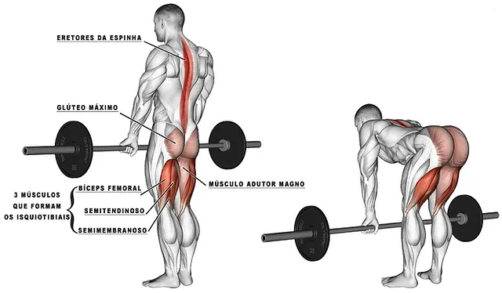
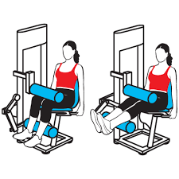
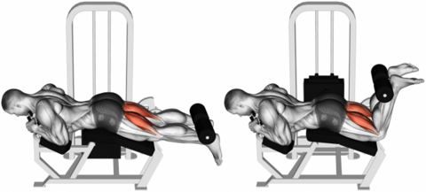

Exercícios para Posteriores:
Stiff com barra
Mantenha os pés paralelos alinhados ao quadril e os joelhos levemente flexionados. Abra o peito, encaixe os ombros para trás e mantenha o abdômen contraído. Levante o peso com o dorso da mão voltado para frente e mantenha a barra bem próxima à coxa, jogue o quadril para trás conforme flexiona o tronco para frente. Desça até o chamado limite de amplitude, ou enquanto o tronco se mantiver reto, sem arquear.
Cadeira flexora
Sentar no aparelho, apoiando bem a coluna, os pés devem estar apoiados em cima da almofada, com esta na altura da linha dos tornozelos. Prestar atenção também ao travar a almofada que apóia na coxa, pois esta deve estar logo acima do joelho. Flexionar os joelhos até contrair ao máximo o músculo da posterior da coxa. Retornar lentamente a posição inicial estendendo os joelhos de maneira controlada.
Mesa flexora
Ajuste a carga antes de iniciar o exercício. Deite-se de barriga para baixo na mesa flexora. Em seguida, apoie os joelhos para fora do aparelho e deixe o apoio do equipamento um pouco acima do tornozelo. Depois, flexione as pernas e aproxime os calcanhares do bumbum puxando o apoio. Volte à posição inicial.